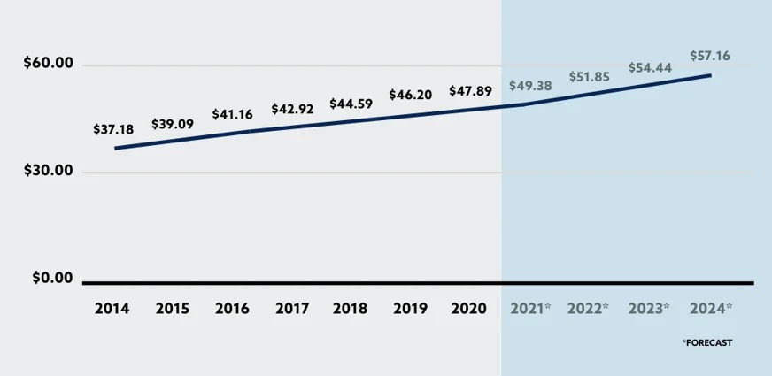

Learn how you can leverage GPS vehicle tracking to increase your profits throughout the dealership.
By MOGO
2 min. read
It’s impossible to predict how the economy, supply chain issues, and buying habits will affect supply and demand. To protect your dealership’s revenue, it’s important to diversify your revenue streams.
How do you unlock new revenue? With GPS tracking and recovery. Let’s discuss how.
The accessories market has been steadily increasing since 2014, and it’s currently worth $49 billion. By 2024, it’s expected to grow to $57 billion.

Source: sema.org
Dealerships currently capture only 14% of the overall market, so there’s a lot of revenue potential there. Automotive retailers are in a good position to increase their market share because they have a captive audience with every customer that interacts with the dealership.
Why focus on selling GPS trackers specifically? In 2020, alarms, remote starts, and recovery accessories were the fourth most sold accessories. Protection products are popular with customers, and they’re lucrative for dealers too. Electronics like GPS trackers have an 81% profit margin.
By selling vehicle theft recovery service, you can open new F&I revenue and increase profits per vehicle.
Unlike other accessories like floor mats, roof racks, or spoilers, GPS trackers can create recurring revenue for the dealership in the service department.
After a customer purchases a vehicle with a GPS unit installed, you can automatically send them timely maintenance alerts via text or email. These alerts are based upon the vehicle’s actual mileage. When planning your marketing campaigns, you won’t have to guess when the customer hits a new maintenance milestone.
By making it easier for customers to stay on top of servicing their vehicles, you’ll build trust with them while increasing revenue. Every vehicle sale represents only one transaction, but return business in the service department increases each customer’s lifetime value.
Offering customers an add-on that provides long-term value drives future business not just for service but for sales as well. When customers are satisfied with their purchase and your dealership is top of mind — another benefit of sending regular maintenance alerts — they’re more likely to return to your store when they’re ready to purchase another vehicle.
No matter what’s happening in the automotive retailing industry, leverage GPS vehicle tracking to boost your profits throughout the dealership.